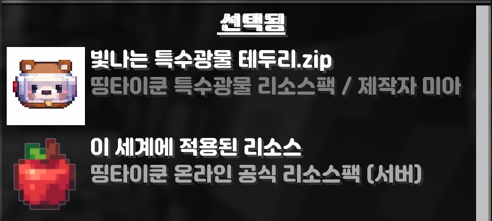
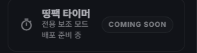

띵팩 타이머 설치 가이드
띵팩 타이머는 띵타이쿤 온라인에서 곡나가와 광석 골렘의 쿨타임을 더 편하게 확인할 수 있도록 도와주는 클라이언트 전용 모드입니다.
01
extension사용 전 준비
Fabric 1.21.4 환경과 mods 폴더 위치를 먼저 확인해 주세요.
check_circleFabric 1.21.4 환경에서 사용
check_circle다운로드한 JAR 파일을 .minecraft/mods 폴더에 넣기
check_circle조작키 설정에서 띵팩 타이머 설정 열기 키 확인
설정창 열기
설정한 키를 누르면 띵팩 타이머 설정창이 열립니다.
곡나가 레벨HUD 표시광석 골렘 쿨타임 표시쿨타임 종료 시 표시HUD 위치 편집타이머 초기화
HUD 위치 및 크기 조절
HUD 위치 편집 화면에서 직접 드래그로 위치를 조정할 수 있습니다.
완료편집 종료
초기 위치기본 위치로 되돌리기
HUD 크기HUD 크기 변경
04
timer타이머 작동 방식
게임 내 채팅/알림 문구를 감지해 자동으로 작동합니다.
곡괭이 나가신다! 스킬을 활성화했습니다.
곡나가 남은시간 / 쿨타임 시작
광석 골렘이 등장했습니다!
광석 골렘 쿨타임 5분 시작

설정창 예시
설정창 구성과 옵션 배치를 확인할 수 있습니다.

HUD 표시 예시
게임 내 HUD 배치와 표시 방식을 확인할 수 있습니다.
05
info참고 사항
클라이언트 전용 모드이며, 다른 HUD 모드와 함께 사용할 경우 위치가 겹칠 수 있습니다.
클라이언트 전용
게임 내 채팅/알림 문구를 감지해 작동합니다.
주의
서버 문구가 변경되면 일부 기능이 정상적으로 작동하지 않을 수 있으며, 다른 HUD 모드와 함께 사용할 경우 위치가 겹칠 수 있습니다.
제작자
미아